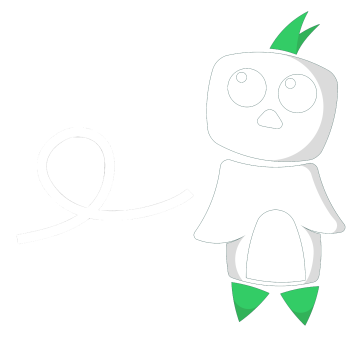
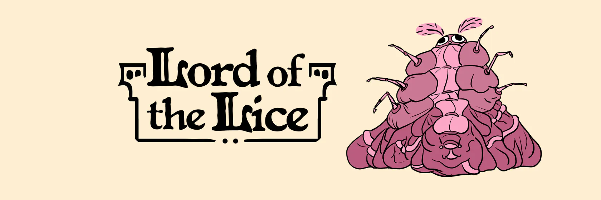
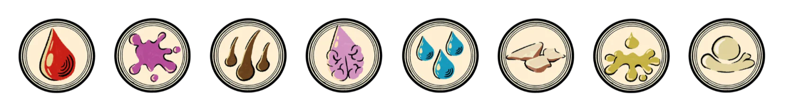
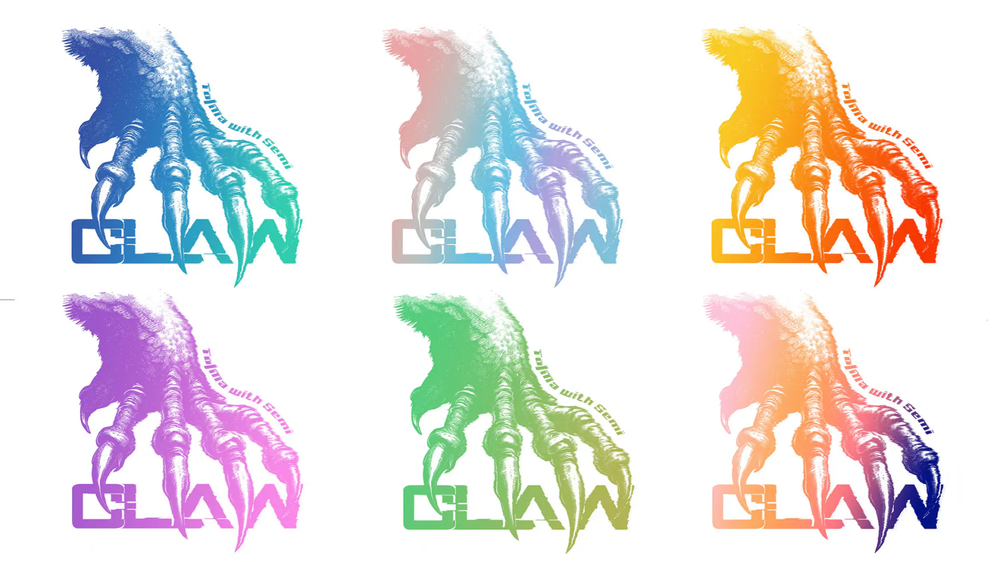
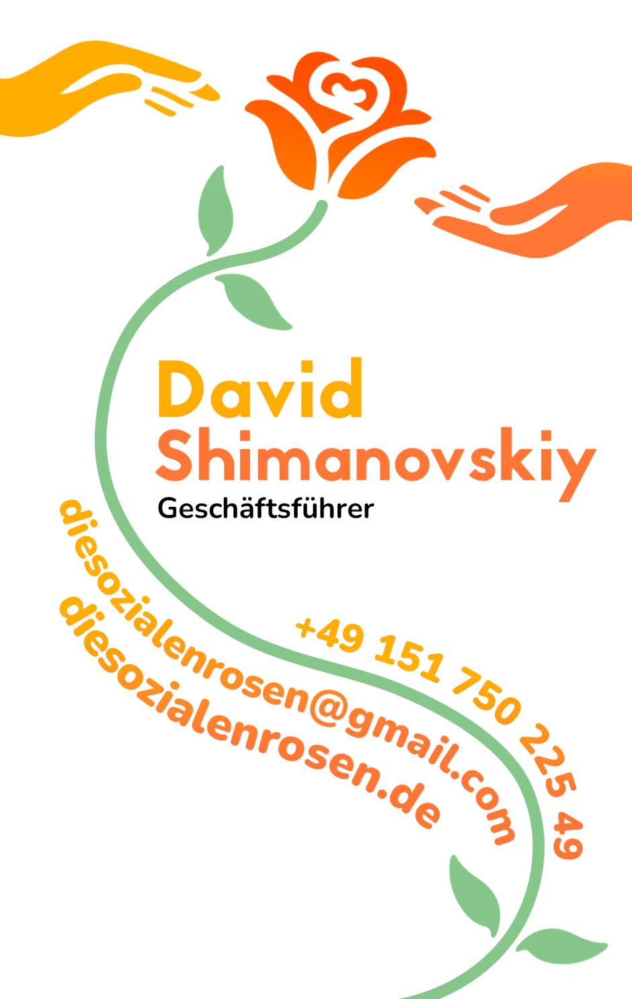
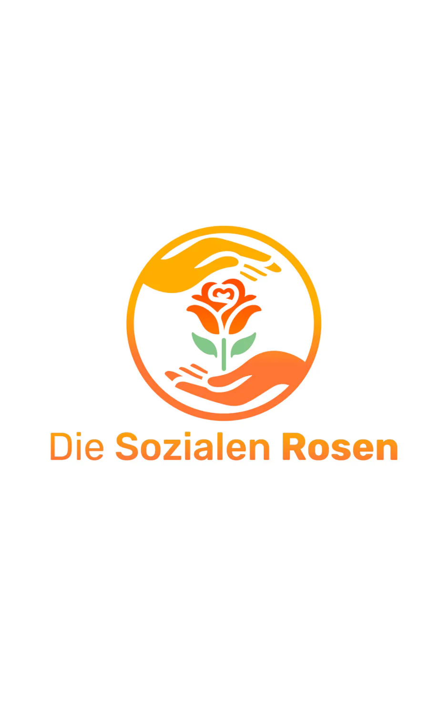

Nicolas Thiele
I am an aspiring graphic designer with a passion for web development and interface design who has contributed to numerous creative projects.
This is
Bischnablu,
my mascot

Studio Mottenblau
Lord of the Lice


Claw

Die Sozialen Rosen

